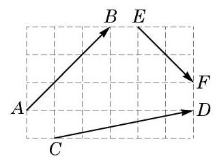
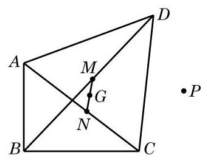
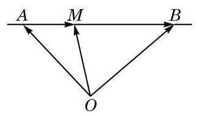
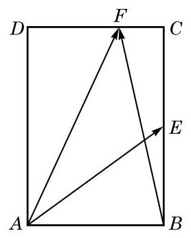
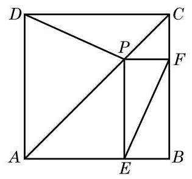
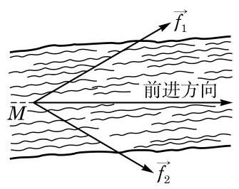

复习题A · 1
- 如图, 在边长为 1 的小正方形组成的网格上, 求:
(1) ； (2) ； (3) .

(第 1 题)
学生阅读版 / 沪教版高中数学
必修第二册
第8章平面向量 · 保留教材主线与原题
教材与正式教参整合
向量的故事可以追溯到遥远的年代. 早年的向量——物理学家称之为“矢量”，只是物理学专门用来表示力和速度等物理量的工具, 并不为数学家所重视. 古希腊学者亚里士多德 (Aristotle) 已经知道两个力的合成可以用平行四边形的法则得到. 但是, 在欧几里得 (Euclid)集古希腊数学大成的《几何原本》中，却没有讨论向量. 此后 2000 年左右，不管是文艺复兴时期, 还是牛顿(I. Newton)与莱布尼茨(G. Leibniz)创立微积分之后的 17、18 世纪, 人们对向量的认识并没有发生什么根本性的变化. 但进入 19 世纪，事情开始有了很大的转机. 其中, 对 “复数” (将在下一章学习) 认识的深入起了重要的推动作用. 为了更好地理解复数, 丹麦数学家韦塞尔 (C. Wessel) 于 1797 年, 瑞士数学家阿尔冈 (J. Argand) 于 1806 年独立地建立起复数的几何表示, 而高斯 (J. Gauss) 的工作则使这一原理广为人知, 并被数学家们普遍接受. 在熟悉复数的几何表示之后, 数学家们逐步认识到复数可用来表示和研究平面上的向量. 平面向量与复数之间建立起一一对应, 这不但为虚数的现实化提供了可能, 也为向量的发展开辟了道路.
在现代数学中, 平面上和空间中直观的向量被形式化地推广为高维向量, 形成了抽象的向量空间的概念, 是大学数学中线性代数的主要内容.
向量连接着代数和几何, 连接着数学与物理. 在数学上, 点的直角坐标、向量的坐标分解、直角三角形中锐角的正弦与余弦、复数的实部与虚部, 这些概念形式上不同, 却又彼此相通. 因此, 向量也会是中学数学舞台上一位独具魅力的角色.
(1)向量:既有大小又有方向的量，常用 等记号表示.
(2)向量的模:向量的大小，向量 的模记为 .
(3)零向量:其模为 0，方向任意.
(4)单位向量:模为 1 的向量；非零向量 的单位向量是 .
(5)平行向量:方向相同或相反的向量.
(6)相等向量:方向相同、模相等的向量.
(7)负向量:方向相反、模相等的向量.
(1)平面向量的加法、减法:运用平行四边形法则或三角形法则.
(2)减去一个向量等于加上它的负向量.
(3)实数与平面向量的乘法:实数 与向量 的乘积，记作 .
(4)向量的加法满足交换律和结合律；实数与向量的乘法对向量加减法满足分配律。
(1)向量的夹角:向量 与 的夹角记为 ，其值 .
(2)向量的投影:向量 在非零向量 方向上的投影是如下的向量:
(3)向量 与 的数量积定义为
(4)向量的数量积满足交换律，并且是线性的(即对向量的加减满足分配律，且可与实数的乘法交换).
(1)平面向量基本定理:给定平面上两个不平行的向量，则该平面上的任意向量都可以唯一地表示为这两个向量的线性组合，也就是说，平面上任意两个不平行的向量都组成了一个基.
(2)向量的坐标表示:在直角坐标系中，把向量 的起点放到坐标原点，向量就直接用它的终点坐标 表示为 ，称为向量的坐标表示，这样，向量 就可写成坐标轴正方向上的单位向量 的线性组合 .
(3)给定平面上两点 与 ，则 .
设向量 ,则
(1) .
(2) .
(3) .
(4) .
设向量 ,则
(1) .
(2) 或 .
(3) .
要体会如何从各种有关的问题中抽象出相应的向量问题，并用所掌握的向量方法解决这个向量问题，从而使原问题得以解决.
(1) ； (2) ； (3) .

(第 1 题)
(1)求 ；
(2)当 为何实数时， 与 平行？平行时它们是同向还是反向？
(1)求向量 的坐标及 ；
(2)已知向量 ，求 及 的坐标；
(3)求 .

(第 11 题)

(第 2 题)
(1)求证:向量 与 垂直；
(2)当向量 与 的模相等时，求 的大小.

(第 4 题)

(第 8 题)

(第 10 题)